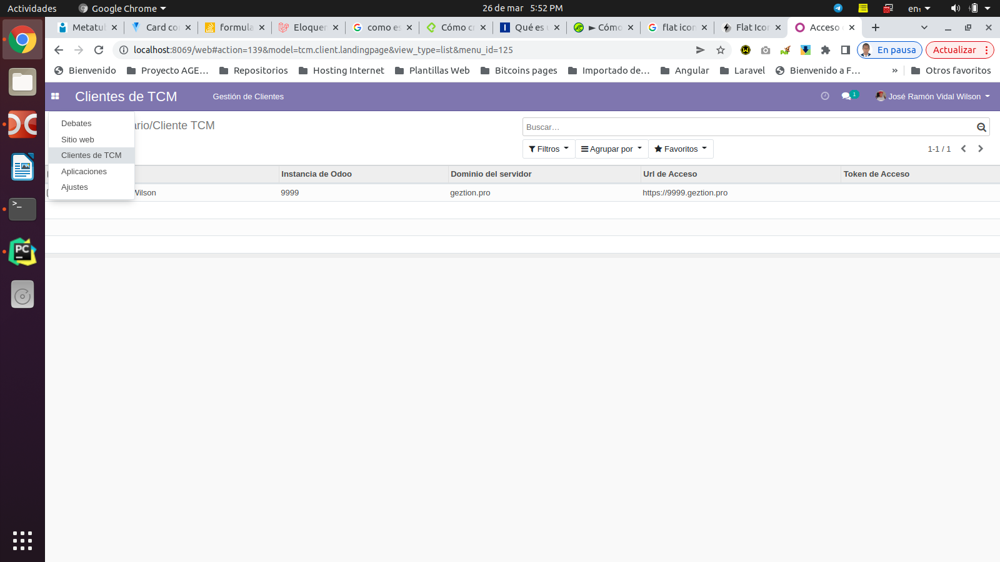
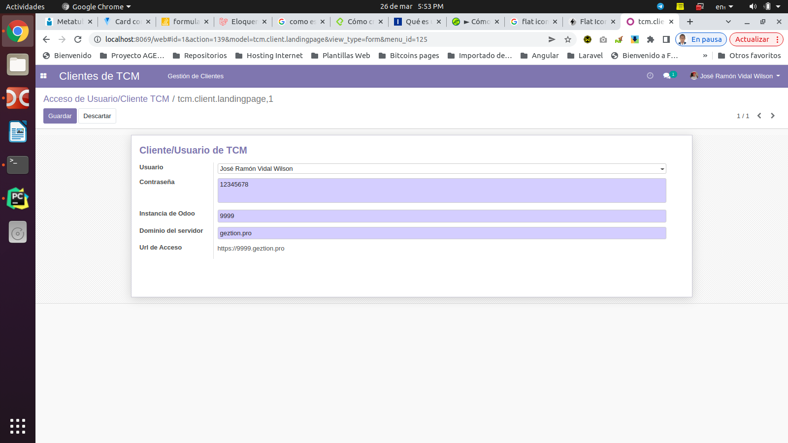
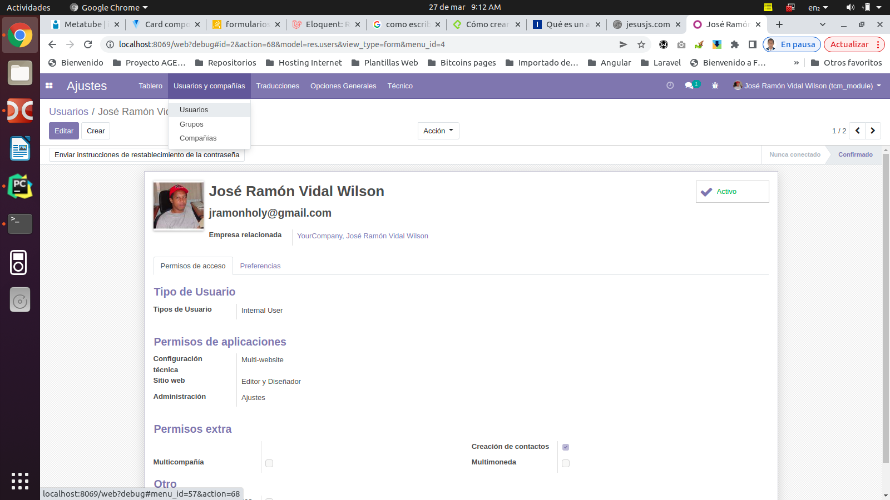
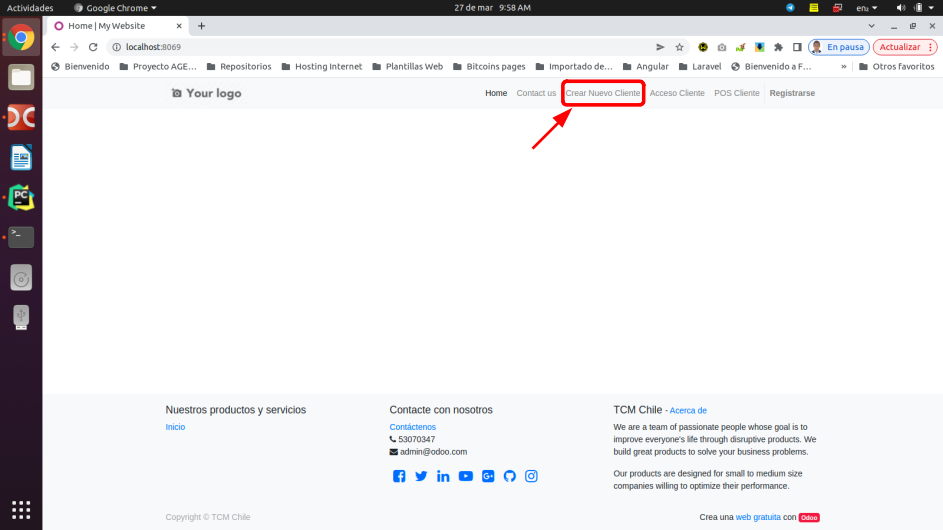
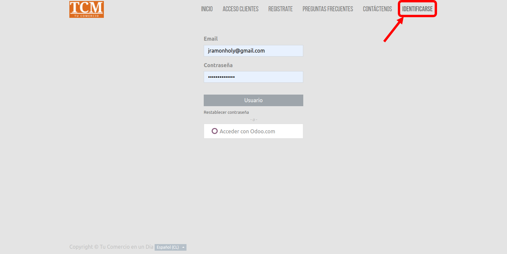

Configuracion
Modulo: TCM Client Landing Page
Descripcion
Este modulo es el encargado de redireccionar y/o navegar hacia de forma directa hacia los clientes desde el portal principal TCM.
Instalacion del modulo
Para la instalacion del modulo se debe iniciar como usuario administrador desde el portal pricipal TCM y luego acceder a la vistas de aplicaciones y en la barra de filtros escribir el texto TCM y seguidamente seleccionar el modulo con el nombre TCM Client Landing Page y luego hacer click en instalar.
Como usar este modulo
Para utilizar esta caracteristica, debemos ir hacia el menu de aplicaciones del Odoo12 y seleccionar la opcion Clientes de TCM y aparecera la lista de los clientes del portal principal.  Para agregar un nuevo cliente, basta con hacer click en el boton agregar y seguidamente aparecera el formulario de edicion de los datos correspondiente. Luego de editar los datos necesarios hacemos click en el boton guardar para registrar los cambios o en el boton cancelar para anular la edicion. Para modificar los datos de un cliente dado, hacemos click en un elemento que aparece en el listado que se muestra arriba y seguidamente se abre el formulario de edicion para modificar los datos. 
Navegar de forma directa hacia los clientes desde el portal
- Primero: Los usuarios deben de haber sido agregados por un administrador en el modulo de gestion de usuarios del portal TCM. 
- Segundo: El administrador del portal principal debe de crear la instancia del cliente a traves de la opcion CREAR NUEVO CLIENTE en el portal principal. 
- Tercero: Una vez que el usuario este registrado en el portal y haberse insertado en control de navegacion descrito anteriormente en el formulario de clientes de TCM, este debe de loguearse mediante la opcion IDENTIFICARSE que aparece en el portal principal. 